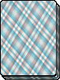
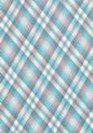

36 карт
 Победитель
Правила игры в "подкидного" дурака:
1) Используемые элементы:
....а) Колода из 36 карт и карта, показывающая "козырную" масть в данной игре (левая сторана, середина);
....б) По одной игровой коолоде у игрока и противнка (верх и низ, середина);
....в) Колода "Бито", куда убираются карты после успешного отражения атаки одной из сторон (правая сторона,
середина);
....г) Кнопка конца хода (правая сторона, внизу);
....д) Показатель, чей ход (правая сторона, вверху);
2) Как проходит игра:
....а) В начале игры и после каждого хода из колоды раздаются карты каждому участнику пока у них меньше, чем
шесть карт,или пока в колоде не закончатся карты;
....б) Первый ход распределяется случайно, дальше очерёдность идёт по очереди. Очередь может быть сохранена за
участником, если его оппонент не смог отразить атаку;
....в) Атака происходит следующим образом:
........I ) Участник выкладывает на доску карты одной "стоимости" в цифрах без учёта масти, затем завершает
ход;
........II ) Если оппонент отбился, то атакующий может "подкинуть" любые карты из своей колоды той же
"стоимости", что и карты на доске;
........III ) Если оппонент не отбился, то он забирает себе все карты с доски и следующий ход остаётся за
нападающим;
........IV ) Если оппонент отбился и вам нечего "подкинуть", то карты уходят в "Бито", а следующий ход делает
обороняющийся;
........V ) Одновременно на доске может находится не более 6 атакующих карт;
3) Условия победы: У участника не остаётся карт
Ход игрока